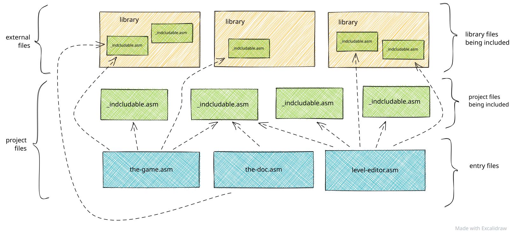
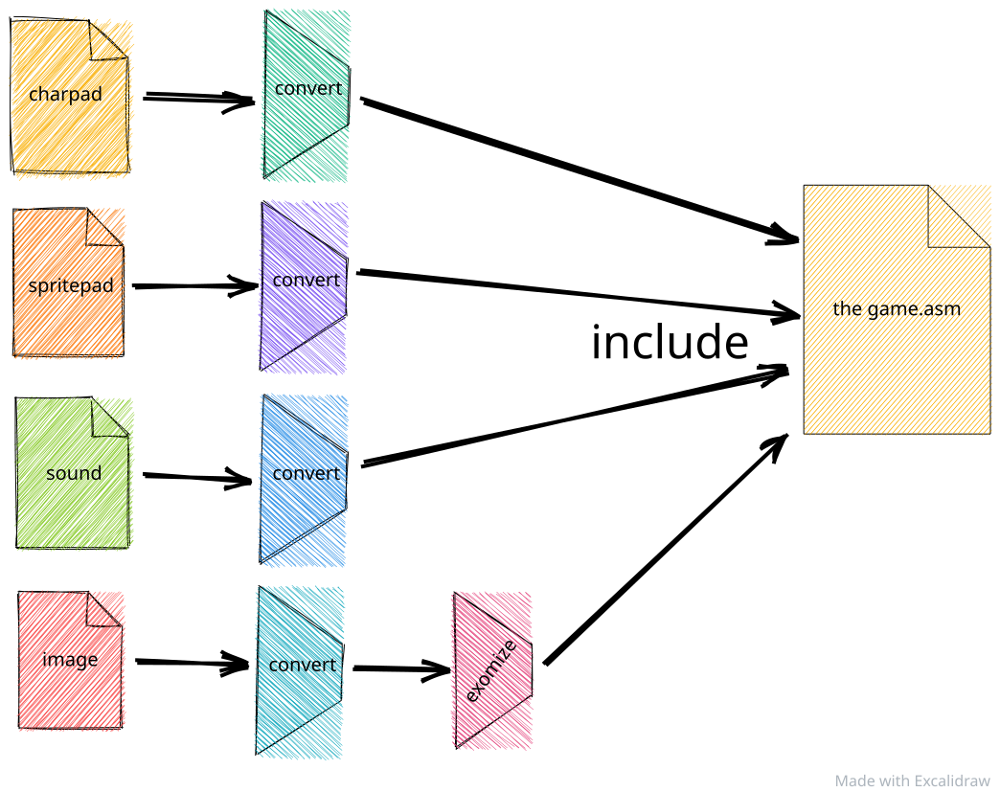
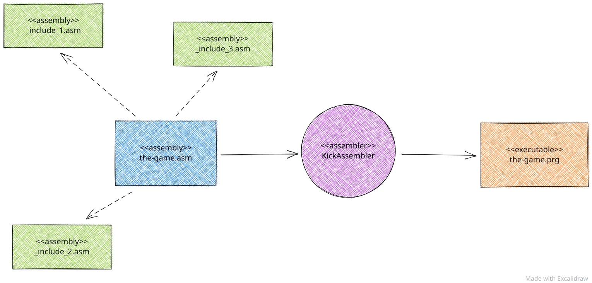
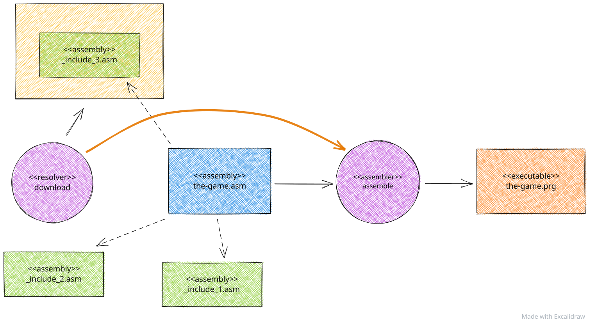
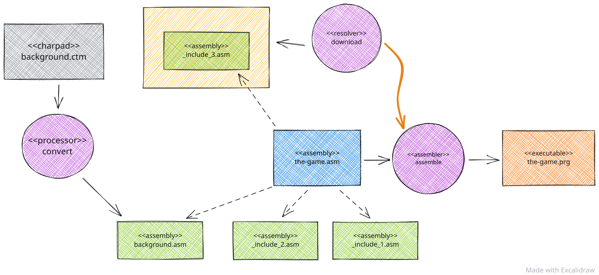
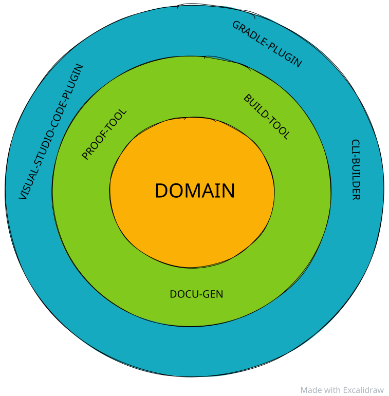

| This document is under development! |
This is initial concept paper of Retro Build Tool - an automation device to build various 8-bit targeted assembly projects.
1. Overview
1.1. Retro assembler project model
The source model of any retro assembler (MOS 6502 based) project is very simplified. There is no interim form of compilation process and there is no linker. The only means to reuse shared code is to use import directive therefore for the project it is sufficient to know all entry point files and assembly them one by one into executables (i.e. PRG files). All internal dependencies are specified within source files. All external dependencies must be handled externally (via retro assembler build tool).

There are other kind of files kept in the project:
-
data files of Charpad or similar software for developing tiled-based backgrounds,
-
data files of Spritepad or similar software for developing sprites,
-
source files of GoatTracker for SID music sources,
-
plain images in any format to be displayed.
All these files should be kept in source form and then convert via processors to embeddable form (i.e. binary). It should be possible to compress binary form if needed, i.e. via Exomizer.

2. Processes
2.1. Simple assembling process
In its simplest form we take a single asm file (an entry file) and compile it with Assembler (i.e. with KickAssembler) to get an output file (in this case this is an executable prg file).
There can be plenty of additional files that are included implicitly to the entry file via import directive.
For these "includes" files no separate output files are generated.

2.2. Resolving external dependencies
Include files can be delivered as external dependencies.
In this case these dependencies must be resolved before assembling.
Resolving usually means: downloading them into some volatile place to enable contained asm files to be included by project sources.

2.3. Converting resource files into assembly
Third party software can be used to produce meaningful resources such as graphical or musical data.
These resources require further processing in order to be embedded into the assembly program.
Dedicated processors can be used to accomplish this conversion task.
These processors produce asm files that can be included into the main program.
Alternatively, processors can produce binary data that can also be embedded into assembly as data blocks.

3. Requirements
3.1. Portability
The Build Tool should basically run everywhere where Java runs.
3.2. Resource processors
These processors are intended for pre-assembling usage.
3.2.1. Charpad converter
Converts Charpad source file into the following outcomes:
-
charset file,
-
block definition,
-
map definition.
Any of the outcome is optional. Any of the outcome can be either and assembly file or binary file. Each of the outcome can result in more than one file (i.e. big map can be divided into few smaller maps using coordinates).
3.2.2. Spritepad converter
3.2.3. GoatTracker converter
3.2.4. PNG converter
3.3. Generic processors
These processors can be used at any stage of building.
3.3.1. Cruncher/packer
3.4. Postprocessors
These processors are intended for post-assembling usage.
3.4.1. 1541 disk maker
Produces one or more 1541 disk images with:
-
given directory structure,
-
converted binary files,
-
assembled binary files,
-
source binary files.
3.4.2. TAP maker
Produces a TAP file with blocks originated from:
-
converted binary files,
-
assembled binary files,
-
source binary files.
4. Architecture
This tool is following a hexagonal architecture principle that is depicted on the following picture.
